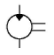
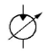
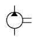
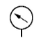

건설기계정비기능사 (2008-03-30 기출문제)
1과목: 건설기계정비(임의구분)
1. 부동액 사용에 대한 설명으로 틀린 것은?
- 부동액을 주입할 때는 세척제로 냉각계통을 청소해야 한다.
- 부동액의 배합은 그 지방 최저 온도보다 5~10℃ 가량 낮게 맞춘다.
- 혼합 부동액의 주입은 기관이 냉각되었을 때 냉각수 용량의 100%를 주입한다.
- 사용 도중에 냉각수를 보충할 때는 부동액이 에틸렌글리콜인 경우 물만을 보충해서는 안된다.
(정답률: 58%)

2. 건식 공기 청정기의 장점 중 틀린 것은?
- 작은 입자의 먼지나 이물질은 여과할 수 없다.
- 설치 또는 분해조립이 간단하다.
- 장기간 사용할 수 있으며, 청소를 간단히 할 수 있다.
- 기관의 회전속도 변동에도 안정된 공기 청정효율을 얻을 수 있다.
(정답률: 83%)
3. 분사노즐의 기능이 불량할 때 일어나는 현상 설명으로 틀린 것은?
- 연소 상태가 불량하다.
- 노크의 발생으로 기관 출력이 떨어진다.
- 연소실에 탄소가 쌓이며, 매연이 발생된다.
- 회전 폭발이 고르지 못하나 압력은 증대된다.
(정답률: 83%)
4. 기관의 커넥팅 로드 베어링 위쪽 부분에 오일 분출 구명을 설치하는 목적으로 가장 옳은 것은?
- 오일의 소비를 적게 하려고
- 오일의 압력을 낮게 하기 위하여
- 실린더 벽에 오일을 공급하기 위하여
- 커넥팅 로드 비틀림을 방지하기 위하여
(정답률: 78%)
5. 엔진의 작동시 플라이 휠의 링기어와 관련이 있는 부품은?
- 발전기
- 배전기
- 기동전동기
- 연료 펌프
(정답률: 80%)
6. 헤드라이트의 형식 중 내부에 불활성 가스가 들어 있고 대기조건에 따라 반사경이 흐려지지 않는 등의 장점이 많은 헤드라이트의 형식은?
- 세미 실드빔식
- 실드빔식
- 환구식
- 로우빔식
(정답률: 71%)
7. 압축비 7.25, 행정체적 300cm3인 기관의 연소실 체적은?
- 47cm3
- 48cm3
- 49cm3
- 50cm3
(정답률: 57%)
8. 디젤 분사펌프의 각 플런저 분사량 오차는 일반적으로 얼마 이내이어야 하는가?
- ±0%
- ±1%
- ±3%
- ±5%
(정답률: 75%)
9. 축전지의 설페이션(유화)의 원인이 아닌 것은?
- 과방전한 경우
- 장기간 방전상태로 방치 하였을 떄
- 전해액의 부족으로 극판이 노출되어 있을 때
- 전해액에 증류수가 혼입되어 있을 떄
(정답률: 67%)
10. 예열플러그 및 히트레인지에 대한 설명 중 잘못된 것은?
- 코일형(coil type)과 실드형(shield type)예열플러그가 있다.
- 예열플러그 발열부의 온도는 약 950~1⑤0℃이다.
- 히트레인지(heat range)의 히터 용량은 400~600W 정도이다.
- 코일형(coil type) 예열플러그의 예열시간은 5~10초이다.
(정답률: 40%)
11. 과충전되고 있는 교류발전기는 어디를 정비하여야 하는가?
- 배터리
- 다이오드
- 레귤레이터
- 스테이터 코일
(정답률: 51%)
12. 신냉매 R-134a의 특징을 설명한 것으로 틀린 것은?
- 분자구조가 안정되어 있다.
- 다른 물질과 잘 반응한다.
- 불연성이며, 독성이 없다.
- 오존을 파괴하는 염소가 없다.
(정답률: 54%)
13. 디젤 전자제어 분배형 분사펌프에서 TPS(타이머 피스톤 센서)의 기능은?
- 타이머 피스톤 위치 검출
- 타이머 피스톤 속도 검출
- 펌프 회전수 검출
- 타이머 피스톤의 회전수 검출
(정답률: 44%)
14. 엔진의 실린더 표준 안지름이 1⑤mm인 6기통 기관에서 안지름을 측정한 결과 최소 값이 1⑤.15mm, 최대 값이 1⑤.32mm인 경우 수정 값은?
- 1⑤.35mm
- 1⑤.50mm
- 1⑤.52mm
- 1⑤.75mm
(정답률: 38%)
15. 건설기계 기관의 밸브(valve)가 갖추어야 할 조건으로 틀린 것은?
- 열 전도율이 낮아야 한다.
- 고온 가스에 부식 되어서는 안된다.
- 충격에 대한 저항력이 커야 한다.
- 내마모성이 있어야 한다.
(정답률: 60%)
16. 건설기계의 디젤 기관 노킹 방지책은?
- 실린더 내부를 냉각시킨다.
- 착화지연을 짧게 한다.
- 압축비를 낮춘다.
- 흡기온도를 낮춘다.
(정답률: 67%)
17. 스크레이퍼(Scraper)의 구성 품목이 아닌 것은?
- 컷팅 에지
- 이젝터
- 에이프런
- 바이브레이터
(정답률: 55%)
18. 아스팔트 믹싱 플랜트에서 골재의 수분을 완전히 제거하고 가열하는 장치는?
- 엘리베이터
- 드라이어
- 믹서
- 저장통
(정답률: 76%)
19. 덤프트럭의 스프링 센터 볼트가 절손되는 원인은?
- 심한 구동력
- 스프링의 탄성
- U볼트 풀림
- 스프링의 압축
(정답률: 76%)
20. 덤프트럭 브레이크 파이프 내에 베이퍼 록이 생기면?
- 제동력이 강해진다.
- 제동력이 약해진다.
- 제동력에는 관계없다.
- 제동이 더욱 잘 된다.
(정답률: 87%)
2과목: 일반기계공학(임의구분)
21. 축거가 1.2m인 지게차의 핸들을 왼쪽으로 완전히 꺾었을 때 오른쪽 바퀴의 각도가 30°이고 왼쪽 바퀴의 각도가 45°일 때 최소 회전반지름은?
- 1.2m
- 1.68m
- 2.1m
- 2.4m
(정답률: 38%)
22. 덤프트럭이 평탄한 도로를 제 3속으로 주행하고 있을 때 엔진의 회전수가 2800rpm이라면 현재 이 차량의 주행속도는? (단, 제 3속 변속비 1.5:1, 종감속비 6.2:1, 타이어 반경 0.6m이다.)
- 68km/h
- 72km/h
- 78km/h
- 82km/h
(정답률: 38%)
23. 포크리프트나 기중기의 최후단에 붙어서 차체의 앞쪽에 화물을 실었을 때 쏠리는 것을 방지하기 위한 것은?
- 이퀄라이저
- 밸런스 웨이트
- 리닝 장치
- 마스터
(정답률: 88%)
24. 클러치 용량이 의미하는 것은?
- 클러치 하우징 내에 담겨지는 오일의 양
- 클러치 마찰판의 계수
- 클러치 수동판 및 압력판의 크기
- 클러치가 전달할 수 잇는 회전력의 세기
(정답률: 59%)
25. 굴삭기 전부 작업장치인 브레이커 설치로 암반 파쇄작업을 수행하엿으나 타격(작동)이 되지 않는 경우 그 원인이 될수 없는 것은?
- 호스 및 파이프의 배관 결함
- 컨트롤 밸브의 결함
- 착암기(accumulator)의 압력 부족
- 메인 펌프의 결함
(정답률: 55%)
26. 유압회로의 제어밸브 종류로 볼 수 없는 것은?
- 방향제어 밸브
- 압력제어 밸브
- 유량제어 밸브
- 속도제어 밸브
(정답률: 72%)
27. 도로주행 건설기계에서 차동장치의 백래시를 측정하는 방법으로 틀린 것은?
- 다이얼 게이지를 캐리어에 견고하게 고정시킨다.
- 구동 피니언 기어를 고정한 후 링 기어를 움직여 측정한다.
- 다이얼 게이지 스핀들을 링 기어 잇면에 수직되게 접촉시킨다.
- 측정값이 규정값 내에 들지 않으면 한쪽 조정나사를 돌려 조정한다.
(정답률: 62%)
28. 불도저의 귀 삽날(end bit)의 정비 방법으로 옳은 것은?
- 한쪽이 마모되면 반대쪽과 바꿔 낀다.
- 마모된 쪽만 교환한다.
- 용접하여 사용한다.
- 한쪽이라도 마모되면 모두 교환한다.
(정답률: 69%)
29. 17톤 불도저의 제 2속에서 견인력은 15000kgf이며, 속도는 3.6km/h이었다. 이 때 견인 출력은?
- 85PS
- 98PS
- 100PS
- 200PS
(정답률: 17%)
30. 변속기 기어(gear)의 육안 점검사항과 무관한 것은?
- 기어의 백래시
- 이 끝의 절손 유무
- 기어의 강도 점검
- 기어의 균열 상태
(정답률: 71%)
31. 트랙 장력이 약해지는 것과 관계없는 것은?
- 트랙 핀의 마모
- 트랙 슈의 마모
- 스프로킷의 마모
- 부시의 마모
(정답률: 39%)
32. 건설기계 유압장치의 운전 전 점검사항 중 틀린 것은?
- 종류가 다른 유압유를 혼합해서 사용한다.
- 유압 작동유의 누유가 있는가를 확인한다.
- 건설기계는 평탄한 곳에 주차하고 점검한다.
- 유압 작동유 탱크의 유량을 확인하고 부족할 경우에는 보충한다.
(정답률: 74%)
33. 스프링 정수가 3kgf/mm인 코일 스프링을 3cm압축하려면 필요한 힘은?
- 30kgf
- 60kgf
- 90kgf
- 120kgf
(정답률: 54%)
34. 기중기의 3가지 주요 작동체에 해당되지 않는 것은?
- 하부 주행장치
- 상부 회전체
- 작업장치
- 굴삭장치
(정답률: 72%)
35. 다음 중 정용량형 유압펌프의 기호는?




(정답률: 70%)
36. 모터그레이더의 동력전달 장치와 관계없는 것은?
- 클러치
- 변속장치
- 차동장치
- 구동장치
(정답률: 45%)
37. 쇄석기에 사용되는 골재 이송은 컨베어 벨트가 쏠리는 경우가 아닌 것은?
- 벨트가 늘어졌을 때
- 각종 롤러가 마모되었을 때
- 리턴 롤러가 고정되었을 때
- 흙이나 오물이 끼었을 때
(정답률: 57%)
38. 유압용 고무호스 설명 중 틀린 것은?
- 진동이 있는 곳에는 사용하지 않는다.
- 고무호스는 저압, 중압, 고압용의 3종류가 있다.
- 고무호스를 조립할 때는 비틀림이 없도록 한다.
- 고무호스 사용 내압은 적어도 5배의 안전 계수를 가져야 한다.
(정답률: 47%)
39. 캐비테이션(공동현상) 발생원인으로 틀린 것은?
- 흡입 필터가 막혀 있을 경우
- 메인 릴리프 밸브의 설정 압력이 낮은 경우
- 흡입관의 굵기가 펌프 본체 흡입구보다 가늘 경우
- 유압 펌프를 규정 속도 이상으로 고속 회전을 시킬 경우
(정답률: 25%)
40. 유압제어 밸브를 실린더의 입구측에 설치하였으며, 펌프에서 송출되는 여분의 유압은 릴리프밸브를 통해서 펌프로 방유되는 속도제어 회로는?
- 미터아웃 회로
- 블리드 오프 회로
- 최대 압력제한 회로
- 미터인 회로
(정답률: 38%)
3과목: 안전관리(임의구분)
41. 담금질 온도가 지나치게 높을 때 나타나는 현상이 아닌 것은?
- 기계적 성질이 나빠진다.
- 담금질 효과가 좋아진다.
- 재료의 균열을 일으키기 쉽다.
- 재료의 변형을 일으키기 쉽다.
(정답률: 71%)
42. 측정오차에 해당되지 않는 것은?
- 개인 오차
- 측정기 오차
- 우연 오차
- 간섭 오차
(정답률: 38%)
43. 기어, 베어링과 같이 축에 끼워 맞춤한 부품을 빼낼 때 사용되는 공구는?
- 폴리셔
- 에어 건
- 풀러(Puller)
- 샌더
(정답률: 69%)
44. 일반적으로 굽힘 하중을 많이 받는데 사용되는 스프링은?
- 인장 코일 스프링
- 토션 바
- 공기 스프링
- 겹판 스프링
(정답률: 43%)
45. 이산화탄소 아크용접에서 반자동 용접의 용접속도(위빙 및 토치 이동)로 가장 적합한 것은?
- 10~20cm/min
- 30~50cm/min
- 60~70cm/min
- 70~80cm/min
(정답률: 63%)
46. 투상도를 보고 물체의 형상을 판단하고자 할 때 선과 현의 분석요령으로 잘못된 것은?
- 투상면에 평행한 직선은 물체의 실제 길이를 나타낸다.
- 투상면에 평행한 평면은 물체의 실제 형상을 나타낸다.
- 투상면에 수직인 평면은 점이 된다.
- 투상면에 경사진 직선은 실제의 길이보다 짧게 나타난다.
(정답률: 35%)
47. 가스 절단 중 예열 불꽃이 강할 때 절단 결과에 미치는 영향은?
- 모서리가 용융되어 둥글게 된다.
- 드래그가 증가한다.
- 슬래그 성분 중 철 성분의 박리가 쉬원진다.
- 절단속도가 늦어지고 절단이 중단되기 쉽다.
(정답률: 52%)
48. 철사 등을 당길 때 가늘고 길게 늘어나는 성질은?
- 전성
- 연성
- 전연성
- 인성
(정답률: 68%)
49. 칠드 주물의 설명으로 옳은 것은?
- 냉각속도를 조정하여 표면이 펄라이트가 된 주물
- 급냉으로 표면의 조직이 시멘타이트가 된 주물
- 항온 열처리를 하여 조직이 베이나이트가 된 주물
- 계단 열처리를 하여 조직이 마텐자이트가 된 주물
(정답률: 53%)
50. 스퍼 외접기어의 모듈(m)이 5이고 기어의 잇수가 각각 Z1=20, Z2=40일 때 양 축 간의 중심거리는?
- 100mm
- 1000mm
- 150mm
- 1500mm
(정답률: 35%)
51. 소화작업에 대한 설명 중 틀린 것은?
- 산소의 공급을 차단한다.
- 유류 화재시 표면에 물을 붓는다.
- 가연 물질의 공급을 차단한다.
- 점화원을 발화점 이하의 온도로 낮춘다.
(정답률: 80%)
52. 연 근로시간 1000시간 중에 발생한 재해로 인하여 손실일수로 나타낸 것은?
- 연 천인율
- 강도율
- 도수율
- 손실율
(정답률: 53%)
53. 블록게이지 사용 후 보관시 가장 옳은 방법은?
- 깨끗이 닦은 후 겹쳐 보관한다.
- 먼지, 칩 등을 깨끗이 닦고 방청유를 발라 보관함에 보관한다.
- 철재 공구 상자에 블록을 하나씩 보관한다.
- 기름이나 먼지를 깨끗이 닦고 헝겊에 싸서 보관한다.
(정답률: 54%)
54. 정 작업에 대한 주의사항으로 틀린 것은?
- 정 작업을 할 때는 서로 마주보고 작업하지 말 것.
- 정 작업은 반드시 열처리한 재료에만 사용할 것.
- 정 작업은 시작과 끝에 조심할 것.
- 정 작업에서 버섯 머리는 그라인더로 갈아서 사용할 것.
(정답률: 50%)
55. 차량 시험기기에 대한 설명으로 틀린 것은?
- 시험기기 전원의 종류와 용량을 확인한 후 전원 플러그를 연결할 것.
- 시험기기의 보관은 깨끗한 곳이면 아무 곳이나 좋다.
- 눈금의 정확도는 수시로 점거해서 0점을 조정해 준다.
- 시험기기의 누전 여부를 확인한다.
(정답률: 78%)
56. 전기용접 작업시 주의사항으로 틀린 것은?
- 용접작업자는 용접기 내부에 손을 대지 않도록 한다.
- 용접전류는 아크가 발생하는 도중에 조절한다.
- 용접준비가 완료된 후 용접기 전원 스위치를 ON시킨다.
- 용접 케이블의 접속 상태가 양호한지를 확인한 후 작업하여야 한다.
(정답률: 87%)
57. 기중기 하중에 대한 용어 설명으로 틀린 것은?
- 정격 총 하중 : 각 붐의 길이와 작업 반경에 허용되는 훅, 그래브, 버캇 등 달아올림 기구를 포함한 최대하중
- 정격하중 : 정격 총 하중에서 훅, 그래브, 버킷 등 달아올림 기구의 무게에 상당하는 하중을 뺀 하중
- 호칭하중 : 기중기의 최대 작업하중
- 작업하중 : 기중기로 화물을 최대로 들 수 있는 하중과 들 수 없는 하중과의 한계점에 놓인 하중
(정답률: 56%)
58. 건설기계의 차동기어장치 분해정비시 안전작업 방법 설명으로 틀린 것은?
- 뒤 차축을 빼낸 후 브레이크 뒤판 고정 볼트를 분리한다.
- 차동기어 케이스 커버와 케이스에 맞춤 표시를 한다.
- 사이드 기어를 들어낼 때 시임의 위치, 장수, 두께에 주의한다.
- 분해 부품의 세척시에는 실(seal)이 분실되지 않도록 한다.
(정답률: 56%)
59. 축전지를 급속 충전 또는 보충전할 때 안전에 주의하지 않아도 되는 것은?
- 화기
- 스위치
- 환기장치
- 전해액 온도
(정답률: 65%)
60. 도로주행용 건설기계의 라디에이터 코어 핀 부분의 이물질을 청소할 때 가장 적합한 방법은?
- 압축공기로 엔진쪽에서 불어낸다.
- 압축공기로 바깥쪽에서 불러낸다.
- 압축공기로 엔진쪽에서 빨아들인다.
- 압축공기로 바깥쪽으로 빨아들인다.
(정답률: 53%)
사용 도중에 냉각수를 보충할 때는 부동액이 에틸렌글리콜인 경우 물만을 보충해서는 안되는 이유는, 부동액과 물의 비율이 균형을 이루어야 부동액의 냉각성능이 유지됩니다. 에틸렌글리콜은 물과 혼합하여 사용하는 것이 일반적이며, 부동액이 물보다 많이 적어진 경우 물만을 보충하면 부동액의 농도가 떨어져 냉각성능이 감소할 수 있습니다. 따라서 부동액이 에틸렌글리콜인 경우에는 부동액과 물을 적절한 비율로 혼합하여 보충해야 합니다.